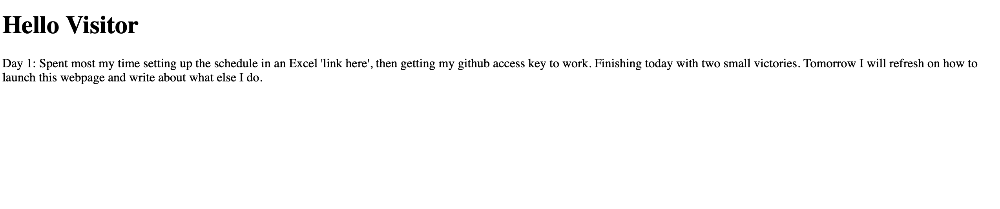

Day 1: Spent most my time setting up the schedule in an Excel 'link here', then getting my github access key to work. Finishing today with two small victories. Tomorrow I will refresh on how to launch this webpage and write about what else I do.
Day 2: Full stack developer, this is the career path. I want to be self sufficient, from the start to finish of a project or system, I want to see it through. Today I ran my website and did a couple CodeWars questions
